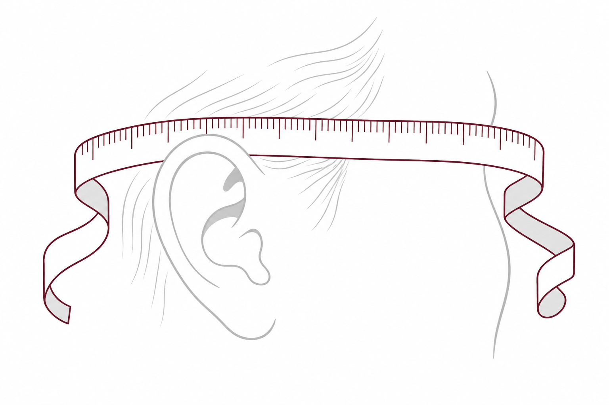
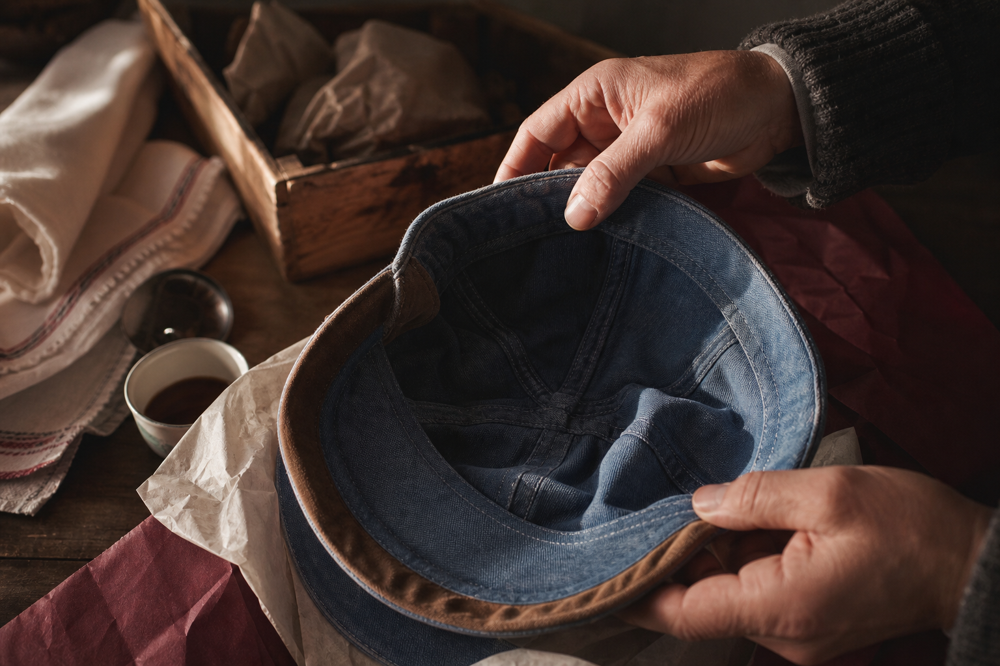
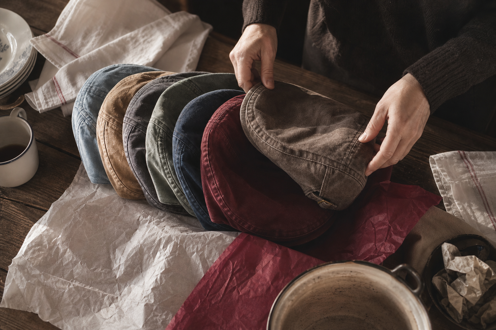
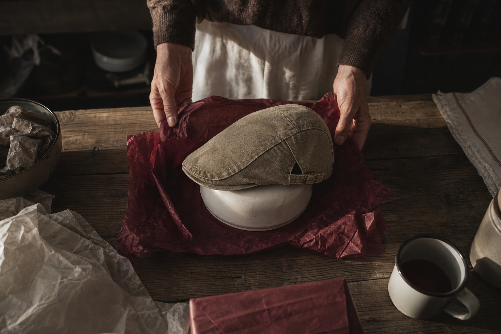

One cut, made to fit
A single shape rather than a size chart to gamble on. Impossible to get the size wrong.
A letter to one woman, written at her kitchen table
Free delivery in France, and thirty days to send it back. You are holding a tape measure at nine in the evening and wondering whether you have the right to guess a man's head.
You have done this before. You picked something you believed in, you watched him say thank you, and you watched it go quiet on a shelf. So this year you were already reaching for the safe thing again.
Stay with the tape a moment longer.
What follows is not a pitch. It is an answer, point by point, to the four things you have not said out loud: that you cannot measure him without ruining the surprise, that a wrong size becomes your errand and not his, that your number might land right at the top of the chart, and that another season will pass with nothing worn in.
We will tell you where the limit is before you ask.
The tape, the mark above the ears, and the rule when you hesitate
What keeps happening
You have given him things you had to take back. That is why you stopped trying.
The jumper went back. Not because he disliked it, because the collar sat wrong and you were the one who queued to exchange it. The watch he thanked you for is still in its box on the shelf, wound once. The boots came in a size that no two makers agree on.
So now you buy him what cannot be got wrong. Something edible. Something for the house. A gift nobody has to keep, because nobody has to fit it.
And every year you skip, the thing he would actually have worn in is a year further from being worn in at all.
Everything else you weighed
The bottle, the wallet, the voucher. Each one fell for a reason you already know.
The bottle he'd open once and leave half-drunk. The wallet he already has, in leather that hasn't given up yet. The voucher, which is just handing him the same problem you're trying to solve.
And every clothing size you can't ask for without giving away the surprise. That's where you've stopped before.
What survives is a narrow thing: something worn, not stored. Something that takes a sponge and mild soap instead of a bin liner. Something made to one cut rather than run through a size chart nobody stands behind.
One kind of object clears that. You already know which, and you've been circling it for two Decembers.
The measure
You do not need his head. You need one number, taken properly, once.
So here is the part you were dreading, and it takes ninety seconds at the kitchen table.
A tailor's tape, flat around the head, just above the ears and across the middle of the forehead. Do not pull it tight. Measure twice. If the two passes disagree, the second one taken slowly is the one to keep.
Between two sizes, take the smaller of the two. Denim gives slightly with wear, never the other way round.
And one thing we would rather say now than let you find out by post: from 61 cm, write to us first at help@ashcroft-flatcaps.com. At the very top of that range the XL sits tight. We would rather talk it through than ship you a size we do not stand behind.
Above 61 cm, write to us first

The fabric, before it was ever a cap
The shrinking already happened. It happened before anyone cut the shape.
You are afraid of a number that moves. You write down 57, you wrap it, and six months later a hot wash turns 57 into something else and the gift quietly stops being worn.
Here, the denim is washed in the piece, before it is cut. The shrink is already behind it. So the tape you hold tonight is measuring the cap he will still be putting on next winter, not a size that will retreat the first time it meets water.
The lining is sewn, not glued. A glued lining lifts with heat and blisters across the forehead. That is what mass-made caps do, and it is the reason a cap gets shelved rather than kept.
One piece, finished before it was shaped. Not a shape hoping the fabric behaves.
Tan suede trim, side-adjuster, nine washes

The moment you hand it over
A trial, not a wear. That distinction is yours to keep, and it protects you.
You will want to know within the minute. So don't send him to the bathroom mirror, where he will study his own face and say something kind to spare you. Hand it over at the door, on the way out. He puts it on, sets the side-adjuster once, walks to the car. That is the only test that tells you anything.
And I'll say the part most shops leave out: that walk is a trial, not everyday wear. Worn as a trial, the cap comes back to us if it doesn't sit right. Worn as yours for a fortnight, it doesn't. I'd rather write that down now than have you discover it later.
The exchange itself, should it come to that, is further down this letter.
Tan suede trim, side-adjuster, nine washes
Point by point
Neither one is about him. Both are about what lands on you afterwards.
You're not afraid he'll dislike it. You're afraid of the week after: the box, the label, the trip to the counter, all of it yours while he says it doesn't matter.
So here it is before you ask. A size exchange is the most common request we handle, and we handle it as a priority within the return window. It is a procedure, not a favour.
And the harder one. If your tape lands at 61 cm or above, write to us at help@ashcroft-flatcaps.com before you order. We'd rather say that now than send you something that stays tight, then send it a second time. Every season you put this off is another season he wears nothing you chose.
Size exchange is the request we see most, and it's treated as a priority within the return window. You write once; we handle the rest.
At 61 cm and above, write to us before ordering rather than after. We'd rather discuss the measure by email than ship something that stays tight.
Before you ask
Three things we'd rather say now than have you discover after the wrapping paper is off.
Mass-made caps promise everything because nobody stands behind them. I'd rather hand you the limits first.
Dispatch runs 24 to 48 working hours. Delivery in mainland France, 3 to 6 working days after that. Six is a real number, not a worst case we've buried. Count backwards from the day you want to hand it over.
And if your tape reads 61 cm or more, write to us at help@ashcroft-flatcaps.com before you order. One of our customers measured 61 and a half, took the XL, and it stayed tight. We told him so rather than send the same cap back out. I'd rather tell you now than twice.
Yes, and not only in front of a mirror. But it's a trial, not a week of wear: the cap comes back unworn apart from that trial.
Because the chart stops where it stops. Beyond that we'd rather talk it through by email than send you a cap that sits tight and a return to organise.
What they wrote afterwards
Illustrative customer voices, quoted as written.
Both bought for a man who had no idea it was coming. Both took the tape measure themselves, at the kitchen table, then waited to find out whether the parcel would turn into an errand with their name on it.
Neither errand came.
Read what they do not say, too. Neither of them promises you a transformation. One says the measure landed right. The other says it never gets put away.
I gave it to my husband without knowing his head size. I measured with a tape measure, following the guide, and it landed right. I expected to have to handle an exchange. There was none.
Helene P., 41, illustrative customer voice
A gift for my husband. He never takes it off. I was worried about the size; the guide was right.
Customer review, 3 March 2026, size L ordered, no return
A phone call, not a slogan
It was never your judgement. It was a size nobody stood behind.
You have been blaming yourself for years, and I want to give that back to you.
On a support call, one of our team said a thing to a customer measuring 61 cm that I have kept since: past 61 cm, write to us before you order, because I would rather tell you no tonight than take your money and post you a cap that squeezes.
Read that again. Nobody in mass production says it. A cap made in series arrives in a fantasy size, printed on a label, defended by no one, and when it doesn't sit right the chore lands on you. Ours is cut one way and stands behind one limit, stated out loud before you ask.
Every gift that went back into its box was made in series. Not misjudged by you.
The range, and the piece that settles it
You measured once. Here is what that measure meets.
So here is the object itself, now that you know how to size it. One cut, made to fit. Not a wall of sizes made in a series and hoping one lands on him, but a single shape with a side-adjuster: he sets it once, and it stays put. Whatever your tape left unsettled, that adjuster settles.
The cut sits low and follows his face. Tan suede trim along the band, washed denim that already looks lived-in: worn in, not worn out, the day you hand it over.
Nine washes, from an everyday light blue to a burgundy that isn't afraid of colour. We keep adding to them. Which is the small cost of waiting, and the only one I'll name here: another season he doesn't spend wearing one in.
A single shape rather than a size chart to gamble on. Impossible to get the size wrong.
Set it once and it stays put, on any head. It absorbs what a tape measure cannot settle.
Suede along the band, and a cut that sits low to follow his face.
From an everyday light blue to a burgundy that isn't afraid of colour. The collection keeps growing.

Keeping it
The whole routine fits on one line of a care label. Read it before you wrap it, because he won't.
The care label says it in five words: cold water, flat, never the tumble.
None of it is difficult, and that is the point of a cap made one at a time rather than by the thousand. This one asks a sponge and a flat surface, now and then. A mass-made cap asks nothing of you, because nothing about it was built to be kept.
Sweat left in the band sets. Heat left in the shell stays. The longer either one waits, the less of the cap comes back.
By hand, cold water, mild soap. Press it out, never wring it.
Flat, on a form or an upturned bowl. Never a radiator, never the tumble dryer: that is what deforms the shell for good.
Damp sponge and mild soap on the sweatband, without soaking it. Store it flat or on a form.

The terms, written down
You measured, you wrapped it, you handed it over. Here is what happens next, in plain terms.
A hundred days. Not a hundred days to admire it in its box, a hundred days to let him wear it in. If it sits right, you never hear from us again. If it doesn't, the money comes back.
And if it's only the size, you write to us first. A size exchange inside the return window is handled as a priority, because that is the one repair we can make faster than you can rewrap anything.
Shipping is free, worldwide, no minimum, both when it goes out. Payments are encrypted and we keep none of your card details. Someone is reachable at any hour, any day, at help@ashcroft-flatcaps.com.
What we won't promise: that we'll guess your measure for you. Above 61 cm, write before you order.
$29.99 instead of $59.98, backed a hundred days
Before you write to us
Answered short, so the tape measure can go back in the drawer tonight.
You would have typed these at the kitchen table, tape still unrolled, too late in the evening to expect an answer. So here they are, in order, plainly.
Tape flat around the head, just above the ears and mid forehead. Don't pull. Measure twice.
Take the smaller of the two. Denim gives slightly with wear, never the other way.
Write to us before ordering. The XL pinches there, and we'd rather say so than ship blind.
Dispatch within 24 to 48 working hours, then 3 to 6 working days. Plan on six.
Yes, not only at a mirror. It stays a trial, not a day's wear.
Size exchange within the return window, handled as a priority. Email help@ashcroft-flatcaps.com.
One last thing, then I'll let you go
Everything you needed to know, you now know before you order.
You have the tape figure. You know that beyond 61 cm we'd rather you wrote to us first than shipped blind. You know a size exchange is a procedure with a hundred days on it, not a chore that lands on your kitchen table.
So the only thing left is the wash. Everyday light blue, or the burgundy that isn't afraid of colour.
A cap postponed is a cap not being worn in. The denim softens on a head, not in a box. Skip this season and you're not saving a decision, you're only pushing back the day it starts looking like his.
Free worldwide shipping, no minimum. 100-Day Fit Guarantee: it sits right, or your money back.